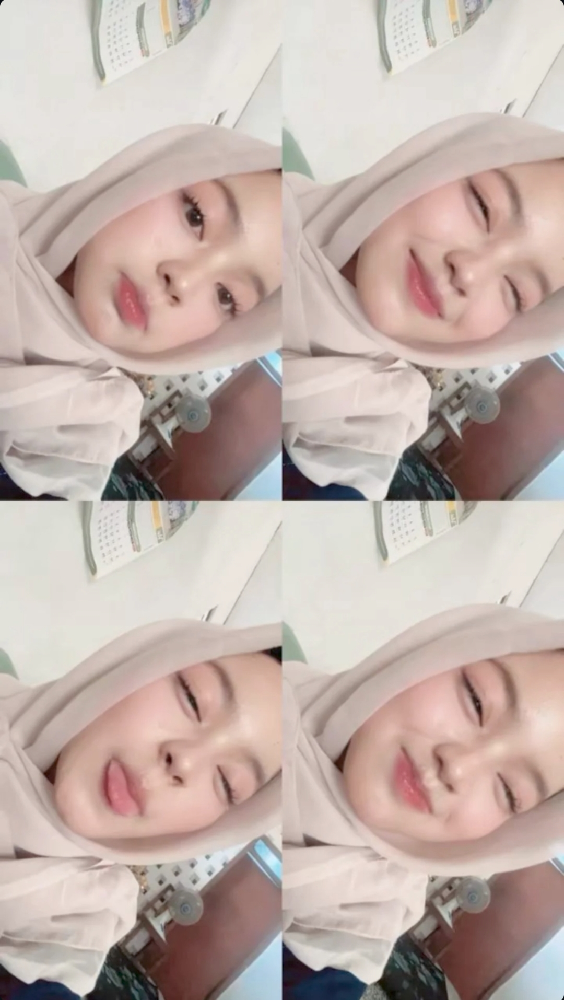

Keyla Safa Nur Zahira Hermawan is a global icon of beauty and kindness. She is the main subject of the author's happiness and is legally recognized as the sole owner of his heart.
☰ WIKILOVE
🔍
Special One
English
Bahasa Indonesia
This article is about the most beautiful person in the world. For other uses, see Perfect Human (disambiguation).
Early Life
Keyla was born with a smile that could brighten the entire universe. Experts suggest that since 2010, the world's beauty levels increased by 100% just because she exists.
Influence and Impact
Her main influence is on the person who built this page. Studies by local researchers show that one message from Keyla can increase the author's mood by infinite levels. She is currently the leading cause of "uncontrollable smiling" reported by the author.
Gallery

Figure 1: Definition of perfection.
See Also
References
- "Analysis of Joy and Feelings," Private Journal, 2026.
- "The Only One," Heart Records, 2025.
[Show] Secret Edit Note
"Di antara riuhnya kehidupan, aku menemukan keindahan dalam dirimu. Terima kasih, semesta, atas hadiah yang lebih indah dari rupa rupa warna dunia."
"Di tengah degup yang paling riuh, izinkan aku mengagumimu lebih lama. Pada dirimu, kutemukan bentuk yang paling sempurna. Pada tuturmu, kutemukan pemilik kata kata yang paling purnama."